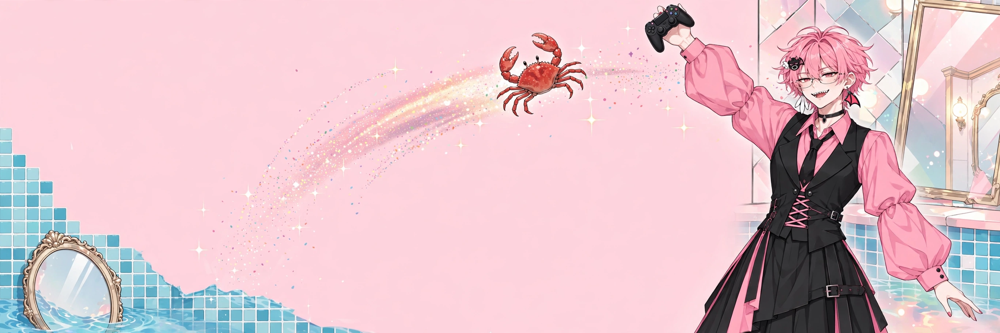

面白×イケボ VTuber
八乙女さきや
やおとめ さきや ／ YAOTOME SAKIYA
天使と悪魔の少年
いい声で、よく笑う。
雑談とゲーム配信。ゲームも作っています。
- 見た目
- ピンクの短髪×細い眼鏡×黒ベスト
- 声
- イケボ
- 中身
- 制作オタク
- 相棒
- カニ
01PROFILEプロフィール
カニは飛ばすもの、鏡は叩き壊して会いに行くもの。
- 名前
- 八乙女さきや（やおとめ さきや）
- 正体
- 天使と悪魔の少年。女装男子。
- 見た目
- ピンクの短い束髪に細い眼鏡、半目の赤い目とギザ歯。ピンクのボリュームスリーブシャツに黒のテーラード風ベストと黒ネクタイ、黒のアシンメロングスカート。右耳に白い羽、左耳に黒×ピンクの悪魔羽。
- 声
- イケボ。看板は「面白×イケボ」。
- 中身
- 制作オタク。ゲームを作って、配信で遊ぶ。
- 相棒
- カニ。飛ばすほう。
- 活動場所
- 配信は Mirrativ 主軸、YouTube は切り抜き中心。
02WATCHみる
03PLAYあそぶ
まずはここで、カニタッチ
本番の前に、ここのカニで肩慣らし。タップするたび、ちょっと飛びます。
カニは待っている。
タッチ 0 回 ／ 合計飛距離 0.0 m
飛ばし足りない人は、上の「カニ飛ばし」本番へどうぞ。
04HOIKUEN八乙女保育園
八乙女保育園は、配信の居場所の愛称。来てくれたみんなが園児さんです。
園の一日
- 登園配信がはじまったら、まずは元気にあいさつ。
- あそびゲームと雑談の時間。カニも飛びます。
- おやつミルクティー休憩をはさみます。
- おひるねしません。作るものがあるので。
- 降園また次の配信で会いましょう。
園児さんの心得
- あいさつは元気よく。
- 笑ったら、それが正解。
- カニは大事なおともだち（飛ばすけど）。
- 困ったことがあったら、コメントで知らせる。
05STYLEスタイル
- 見た目
- ピンクの短髪と細い眼鏡、黒ベストにアシンメロングスカート。右耳の白羽と左耳の悪魔羽が目印の、ダイナー兼バーのオーナー。
- ギャップ
- かわいい格好で、声はイケボ。甘い見た目で、やることは豪快（カニを飛ばす）。
- 約束
- 「面白い」を作って届けること。制作オタクの本気は、配信と作品で見せます。
06VOICEボイス
原声ボイス準備中
本人の声のサンプルは準備中です。用意でき次第、ここで聴けるようにします。
楽曲サンプル：「そばにいて」サビ
※これは楽曲サンプルです（Suno で制作した音源からの抜粋）。原声ボイスとは別に置いています。
07SCHEDULE予定
配信は不定期です。最新の予定とお知らせは、Mirrativ のプロフィールで案内しています。
ガイドライン（ファンアート・切り抜き・生成AIについて）